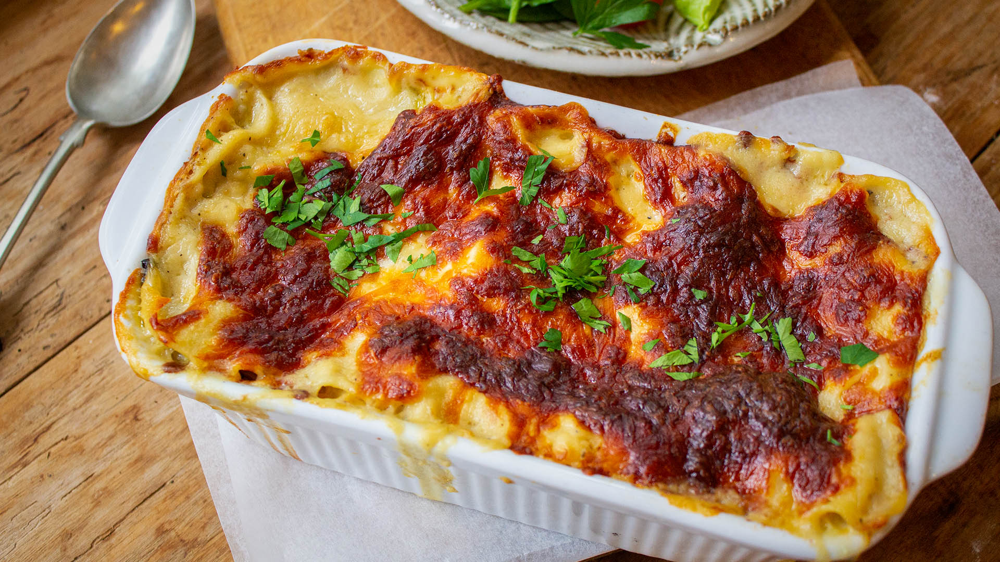

Home
Tuna Lasagne

Description
Tuna lasagna is a dish made with tuna, pasta sheets, tomato sauce, and a creamy white sauce. It's a budget-friendly alternative to classic beef lasagna
Ingredients
- 2 tins (140g) of MSC certified tuna in olive oil, drained
- 1 garlic clove, halved
- 1/2 red chilli, seeded and coarsely chopped
- 1 shallot, coarsely chopped
- One 12-ounce (340gr) jar of roasted bell peppers, drained (or roast them yourself), cut into chunks
- 1 cup (250 grams) tomato pasta, from a can or a carton
- 1/2 bunch of basil, leaves only
- 1 small white onion, finely diced
- 2 vine-ripened tomatoes, seeded and diced
- ¼ bunch of oregano, leaves only
- 1 ¼ bunch of thyme, leaves only
- 1 tbsp red wine vinegar, plus extra if desired
- ¼ cup (70 g) tomato pure.
- 6 sheets of lasagna, uncooked
- 1 mozzarella ball, sliced
- 1 zucchini, spiralized or cut into long thin strips
- 1 eggplant, thinly sliced lengthwise
- 6 green asparagus, spears
- 1 1⁄3 cup (150 g) grated mild gouda
- Olive oil
- Salt and pepper to taste.
Steps
- Heat oil in a medium sized saucepan.
- Add garlic and onion and cook til onion is soft.
- Stir in undrained, mashed tomatoes, water, crumbled stock cube and tomato paste.
- Simmer uncovered for 15 minutes.
- Remove from heat and gently stir in Tuna.
- For the sauce: Melt butter in a microwave proof jug.
- Add flour and blend well before adding milk.
- Mix well with a balloon whisk.
- Microwave for 2 minutes on high whisking after the first minute.
- Layer Lasagna noodles, tuna mix and sauce in a casserole dish.
- Sprinkle with cheese.
- Bake 180 degrees celsius for about 25 minutes. Enjoy!